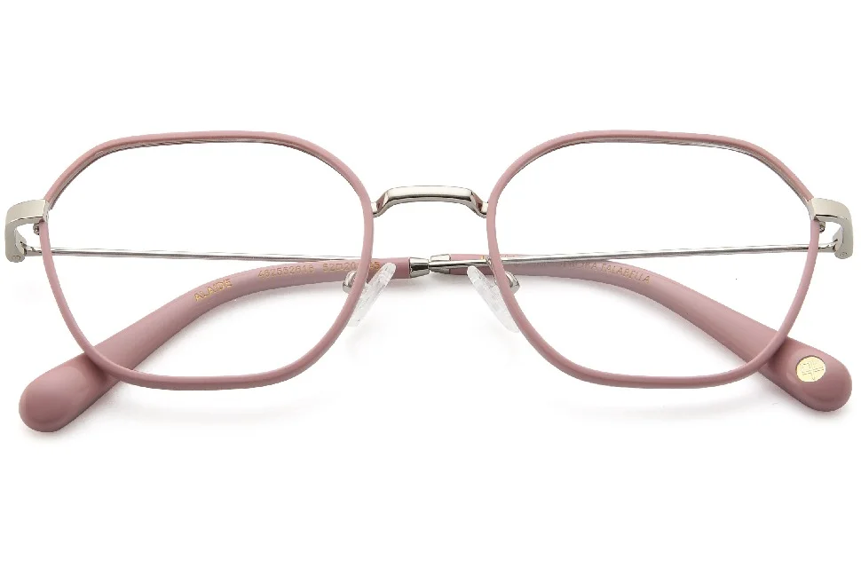
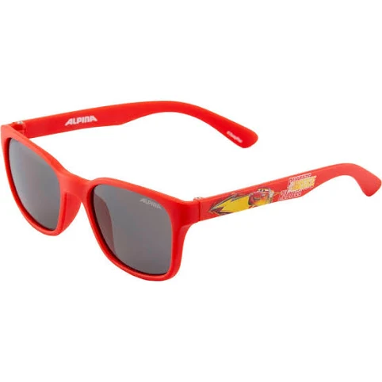
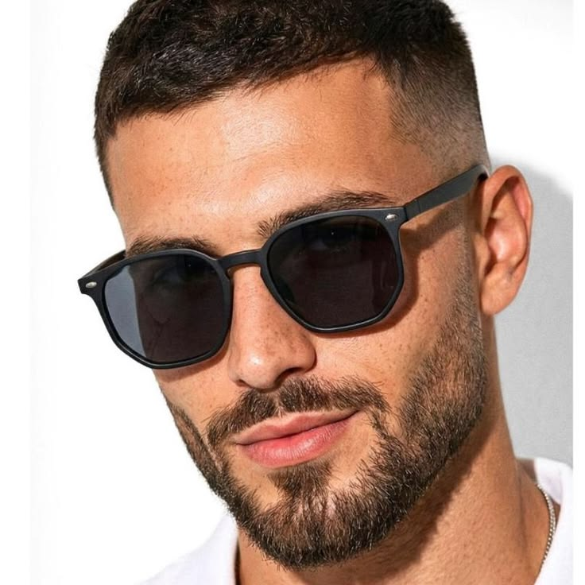

Femininas
Armações para expressar seu estilo.
E você acabou de encontrar sua próxima ótica favorita em Campina Grande. Armações, lentes e um atendimento próximo para ajudar você a escolher.
Na Juliana Dias Ótica você encontra armações modernas, exclusivas e de qualidade, com preços que cabem no bolso. Trabalhamos com óculos femininos, masculinos e infantis e lentes de grau com garantia. Agende seu exame de vista ou traga sua receita. Cuidamos do seu olhar com estilo e confiança.
Na Juliana Dias Ótica, você encontra armações femininas, masculinas e infantis, lentes para diferentes necessidades e ajuda especializada para escolher a melhor opção para você, com segurança, qualidade e ótimo custo-benefício.
Agende seu exame de vistaConheça as categorias e fale com a gente para consultar as opções. As imagens não confirmam disponibilidade específica de estoque.

Armações para expressar seu estilo.

Opções para diferentes estilos e rotinas.

Armações pensadas para os pequenos.

Estilo para acompanhar os dias de sol.
Conheça algumas tecnologias disponíveis em lentes e converse com nossa equipe para entender as opções adequadas à sua necessidade.
Ajuda a reduzir reflexos na superfície das lentes.
Proteção contra radiação ultravioleta até 400 nm.
Lentes que se adaptam à luminosidade.
Pode permitir lentes mais finas, conforme o grau e as características da receita.
A indicação de lentes depende da receita e das características de cada caso. Consulte nossa equipe para conhecer as opções.
Consulte nossas opções de lentesAtendimento para você escolher armações e lentes com mais segurança e encontrar a opção que combina com a sua rotina.
Agende seu exame de vista com especialistas pelo WhatsApp.
Traga sua receita e consulte as opções de lentes de grau com garantia.
Receba auxílio na escolha das armações e lentes para você.
Armações femininas, masculinas, infantis, óculos de grau e solares: encontre opções para diferentes momentos.

Fotos enviadas pela ótica com referências de armações em uso. Consulte as opções disponíveis.
Compartilhamos apenas os comentários recebidos como referência, sem atribuir notas ou avaliações não informadas.
Deyvson Luan destacou a qualidade dos óculos e o atendimento.
Deyvson LuanJordan Lima relatou ter sido muito bem atendido.
Jordan LimaSerá um prazer te receber na Juliana Dias Ótica. Temos uma única unidade física, no bairro Presidente Médici.
Ver localização no mapaAgende seu exame, traga sua receita ou consulte nossas opções de armações e lentes. Venha nos conhecer, será um prazer te receber.